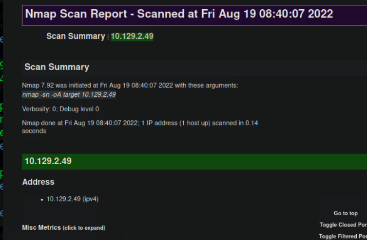
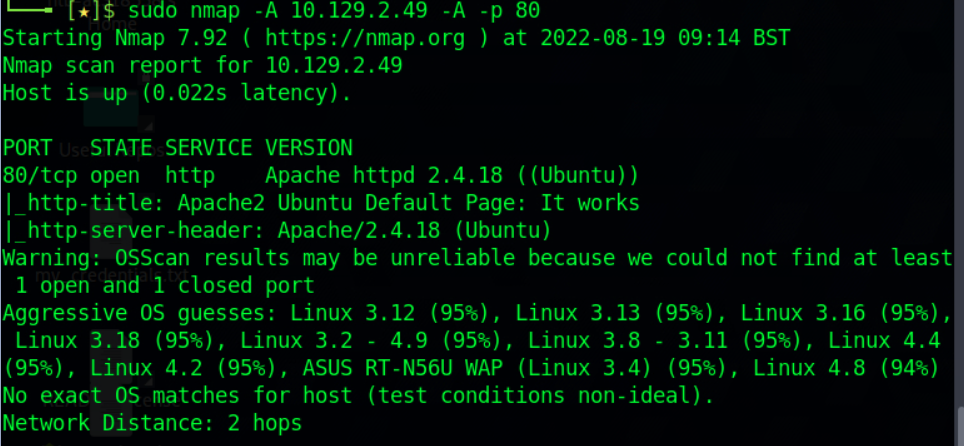

sudo nmap [networkaddress]/24 -sn -oA tnet | grep for | cut -d" " -f5
if an IP list has to be scanned include the ".lst" file with the IPs and use the "-iL" switch
Used Scanning Options : -sn -oA tnet -iL hosts.lst
Only works id the hosts can reply to ICMP
sudo nmap -sn -oA tnet [ip][ip][ip]| grep for | cut -d" " -f5
Another way to determine why Nmap has our target marked as "alive" is with the "--reason" option.
sudo nmap [ip] -sn -oA host -PE --reason
Nmap does indeed detect whether the host is alive or not through the ARP request and ARP reply alone. To disable ARP requests and scan our target with the desired ICMP echo requests, we can disable ARP pings by setting the "--disable-arp-ping" option.
sudo nmap [ip] -sn -oA host -PE --packet-trace --disable-arp-ping
| State | Description |
|---|---|
| open | This indicates that the connection to the scanned port has been established. These connections can be TCP connections, UDP datagrams as well as SCTP associations. |
| closed | When the port is shown as closed, the TCP protocol indicates that the packet we received back contains an RST flag. This scanning method can also be used to determine if our target is alive or not. |
| filtered | Nmap cannot correctly identify whether the scanned port is open or closed because either no response is returned from the target for the port or we get an error code from the target. |
| unfiltered | This state of a port only occurs during the TCP-ACK scan and means that the port is accessible, but it cannot be determined whether it is open or closed. |
| open|filtered | If we do not get a response for a specific port, Nmap will set it to that state. This indicates that a firewall or packet filter may protect the port. /td> |
| closed|filtered | This state only occurs in the IP ID idle scans and indicates that it was impossible to determine if the scanned port is closed or filtered by a firewall. |
By default, Nmap scans the top 1000 TCP ports with the SYN scan (-sS). This SYN scan is set only to default when we run it as root because of the socket permissions required to create raw TCP packets. Otherwise, the TCP scan (-sT) is performed by default. This means that if we do not define ports and scanning methods, these parameters are set automatically.
We can define the ports one by one (-p 22,25,80,139,445), by range (-p 22-445), by top ports (--top-ports=10) from the Nmap database that have been signed as most frequent, by scanning all ports (-p-) but also by defining a fast port scan, which contains top 100 ports (-F).
While we run various scans, we should always save the results. We can use these later to examine the differences between the different scanning methods we have used. Nmap can save the results in 3 different formats. Normal output (-oN) with the .nmap file extension Grepable output (-oG) with the .gnmap file extension XML output (-oX) with the .xml file extension
With the XML output, we can easily create HTML reports that are easy to read, even for non-technical people. This is later very useful for documentation, as it presents our results in a detailed and clear way. To convert the stored results from XML format to HTML, we can use the tool xsltproc.
xsltproc target.xml -o target.html
>It is recommended to perform a quick port scan first, which gives us a small overview of the available ports. This causes significantly less traffic, which is advantageous for us because otherwise we can be discovered and blocked by the security mechanisms. We can deal with these first and run a port scan in the background, which shows all open ports (-p-). We can use the version scan to scan the specific ports for services and their versions (-sV).
sudo nmap [IP] -p- -sV
To view the scan status, we can press the [Space Bar] during the scan, which will cause Nmap to show us the scan status.
Another option (--stats-every=5s) that we can use is defining how periods of time the status should be shown
It is also possible to remove or manipulate the banners from the respective services. If we manually connect to the SMTP server using nc, grab the banner, and intercept the network traffic using tcpdump, we can see what Nmap did not show us.
sudo tcpdump -i eth0 host [sourceip] and [destip]
nc -nv [destip]
Nmap Scripting Engine (NSE) is another handy feature of Nmap. It provides us with the possibility to create scripts in Lua for interaction with certain services. There are a total of 14 categories into which these scripts can be divided:
| Category | Description |
|---|---|
auth |
Determination of authentication credentials. |
broadcast |
Scripts, which are used for host discovery by broadcasting and the discovered hosts, can be automatically added to the remaining scans. |
brute |
Executes scripts that try to log in to the respective service by brute-forcing with credentials. |
default |
Default scripts executed by using the -sC option. |
discovery |
Evaluation of accessible services. |
dos |
These scripts are used to check services for denial of service vulnerabilities and are used less as it harms the services. |
exploit |
This category of scripts tries to exploit known vulnerabilities for the scanned port. |
external |
Scripts that use external services for further processing. |
fuzzer |
This uses scripts to identify vulnerabilities and unexpected packet handling by sending different fields, which can take much time. |
intrusive |
Intrusive scripts that could negatively affect the target system. |
malware |
Checks if some malware infects the target system. |
safe |
Defensive scripts that do not perform intrusive and destructive access. |
version |
Extension for service detection. |
vuln |
Identification of specific vulnerabilities. |
We have several ways to define the desired scripts in Nmap.
DEFAULT SCRIPTS: sudo nmap [target] -sC
SPECIFIC CATEGORY: sudo nmap [target] --script [scriptcategory]
SPECIFIC: sudo nmap [target] --script [scriptname]
Nmap also gives us the ability to scan our target with the aggressive option (-A). This scans the target with multiple options as service detection (-sV), OS detection (-O), traceroute (--traceroute), and with the default NSE scripts (-sC). >
nmap -v -sV -p- -Pn -n --disable-arp-ping --source-port 53 -oX freshTCP.xml